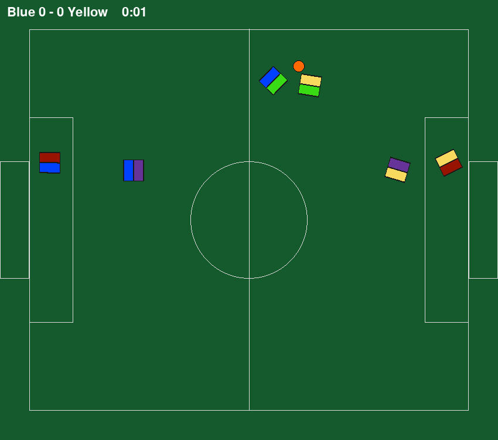

Guía del simulador del equipo
Cómo instalarlo, cómo funciona cada archivo de team-template y cómo modificar el simulador físico rSim. Escrita para quien empieza a programar.
0Sobre esta guía
El equipo usa un simulador para ver en pantalla partidos de VSSS (IEEE Very Small Size Soccer) con robots como los nuestros: omnidireccionales, de tres ruedas. Sirve para probar estrategias sin cargar baterías, sin armar la cancha y sin riesgo de romper nada.
Esta guía explica tres cosas:
- Cómo instalarlo en macOS, en Windows (mediante WSL) y en Linux (capítulo 2).
- Cómo funciona cada archivo de la carpeta
team-template, línea por línea cuando hace falta (capítulos 3 y 4). - Cómo modificar rSim, el motor de física escrito en C++, y repartir esos cambios al equipo (capítulos 5 y 6).
A quién va dirigida
A cualquier integrante del equipo que sepa lo básico de Python: variables, if, for, funciones y listas. Todo lo demás (clases, herencia, terminal, git, entornos virtuales, C++) se explica cuando aparece. No hace falta saber física: los conceptos necesarios están en el capítulo 3.
Cómo leerla
Las preguntas del código
Los archivos de team-template tienen preguntas escritas como comentarios, por ejemplo # How does this work?. Están ahí a propósito: son ejercicios para entender el código. En esta guía, cada pregunta aparece en un recuadro como este:
Ver respuesta
La respuesta está escondida para poder intentar responderla antes de leerla. Lo recomendable: leer el código, escribir una respuesta propia y después comparar.
Otras convenciones
Información de apoyo o un “por qué”.
Un error común o algo que se rompe con facilidad.
Algo para practicar.
Los comandos que se escriben en la terminal aparecen en recuadros grises. Las líneas que empiezan con # dentro de esos recuadros son comentarios: explican, no se escriben. Las etiquetas verificado y sin verificar indican si un procedimiento ya fue probado por el equipo.
1Qué es el simulador
“El simulador” no es un solo programa: son varias piezas apiladas, cada una con un trabajo. Entender esta pila ayuda a saber dónde buscar cuando algo hay que cambiar.
| Pieza | Qué hace, en una frase | Quién la mantiene |
|---|---|---|
| ODE | Calcula la física: dado cómo están los objetos y qué fuerzas actúan, dice dónde estarán un instante después. No sabe nada de fútbol. | Proyecto externo; se instala una vez. |
| rSim | Arma el mundo del fútbol con piezas de ODE: paredes, pelota, robots con chasis y ruedas. | Original del equipo brasileño RobôCIn. Usamos un fork (copia propia) con el robot omni: Roborregos-VSSS2-2027/rSim. |
| robosim | Es rSim compilado como módulo de Python: permite escribir import robosim. | Sale del mismo repositorio que rSim. |
| rSoccer | Organiza la simulación como un “entorno” (con reset() y step()) y dibuja la cancha. | Original de RobôCIn, sin modificar. |
| team-template | Nuestro código: convierte órdenes en velocidades de rueda, arma el partido y contiene las estrategias. | El equipo, en este repositorio. |
Qué pasa en cada instante del partido
El partido avanza en pasos de 25 milisegundos: 40 pasos por cada segundo de juego. En cada paso ocurre este recorrido (los nombres son los reales del código; el capítulo 4 los explica uno por uno):
- Cada estrategia recibe un
World(dónde está la pelota y cada robot) y responde con una lista deCommand(hacia dónde debe ir cada robot). MatchVSSconvierte cadaCommanden velocidades de rueda, usando las fórmulas derobot.py.RSimVSSMixedmanda esas velocidades arobosim.- rSim aplica las velocidades a los motores y ODE calcula 25 ms de física.
- rSim devuelve el nuevo estado; rSoccer lo convierte en un
Framey, si hay ventana, lo dibuja. MatchVSSconvierte elFrameen un nuevoWorldpara cada equipo, y todo vuelve a empezar.

2Instalación
Antes de empezar: la terminal
Todo se instala escribiendo comandos en una terminal: una ventana donde se escriben órdenes de texto. En macOS es la app “Terminal”; en Ubuntu, “Terminal”; en Windows con WSL, la app “Ubuntu”. También sirve la terminal integrada de VS Code (menú Terminal → New Terminal).
Tres comandos básicos que aparecen todo el tiempo:
| Comando | Qué hace | Ejemplo |
|---|---|---|
cd carpeta | Entra a una carpeta (change directory). cd .. sube un nivel; cd ~ va a la carpeta personal. | cd LARC-VSSS-2027/team-template |
ls | Lista lo que hay en la carpeta actual. | ls |
pwd | Muestra en qué carpeta se está. | pwd |
Para correr un comando: escribirlo y presionar Enter. Para detener un programa que está corriendo: Ctrl+C.
Qué instala el script
La carpeta team-template trae un script, install.sh, que hace toda la instalación. Sus pasos son:
- Instala las herramientas del sistema: Python 3.12, un compilador de C++, CMake y la librería de física ODE.
- Crea un entorno virtual (
.venv): una carpeta con un Python propio para este proyecto (se explica en install.sh). - Descarga el rSim del equipo desde GitHub y lo compila (lo traduce de C++ a un programa que la computadora puede ejecutar).
- Instala rSoccer y el resto de las librerías de Python.
Al final imprime rSim omni OK. Si aparece ese mensaje, todo quedó bien.
Paso común: acceso a GitHub
El código vive en GitHub, en la organización RoBorregos (este repositorio) y Roborregos-VSSS2-2027 (el fork de rSim). Hace falta una cuenta de GitHub con acceso a ambas. Si los repositorios son privados, también hay que autenticarse en la computadora una sola vez. La forma más sencilla es la herramienta oficial gh:
gh auth login # responder: GitHub.com → HTTPS → Login with a web browserCada sistema instala gh de forma distinta; se indica en su sección.
macOS
verificado- Instalar Homebrew, el instalador de programas para macOS. Seguir las instrucciones de brew.sh: se copia un comando en la terminal. Al terminar, Homebrew imprime dos o tres comandos más (“Next steps”) que hay que copiar y correr para que
brewfuncione. - Instalar el compilador de Apple (si no está):
xcode-select --install - Instalar git y gh, y autenticarse:
brew install git gh gh auth login - Descargar el repositorio del equipo y entrar a la plantilla:
Si la carpetacd ~ git clone https://github.com/RoBorregos/LARC-VSSS-2027.git cd LARC-VSSS-2027/team-templateteam-templatetodavía no está en la rama principal (main), hay que cambiar a la rama donde esté, por ejemplogit switch simulator-strategy. - Correr el instalador:
Tarda uno o dos minutos. Debe terminar con./install.shrSim omni OK.
Windows, mediante WSL
sin verificarCompilar rSim directamente en Windows es complicado. La ruta recomendada es WSL (Windows Subsystem for Linux): un Ubuntu completo que corre dentro de Windows. Se instala una vez y después se usa como una app más. Requiere Windows 11 (o Windows 10 actualizado; con Windows 10 puede no aparecer la ventana del partido).
- Instalar WSL con Ubuntu 24.04. Abrir PowerShell como administrador (clic derecho sobre PowerShell → “Ejecutar como administrador”) y correr:
Se recomienda 24.04 porque trae Python 3.12, la versión que usa el equipo. Con versiones más nuevas (26.04 o posteriores) también funciona: el instalador descarga por su cuenta un Python 3.12 aparte. Reiniciar la computadora si lo pide.wsl --install -d Ubuntu-24.04 - Abrir Ubuntu desde el menú Inicio (aparece como “Ubuntu 24.04”). La primera vez pide crear un usuario y contraseña de Linux. Anotar la contraseña: se pedirá cada vez que un comando use
sudo(permisos de administrador). Al escribirla no aparecen caracteres en pantalla; es normal. - Actualizar Ubuntu e instalar git y gh, dentro de la ventana de Ubuntu:
sudo apt update && sudo apt upgrade -y sudo apt install -y git gh git config --global user.name "Nombre Apellido" git config --global user.email "correo@ejemplo.com" gh auth login - Descargar el repositorio en la carpeta de Linux, no en las de Windows:
cd ~ git clone https://github.com/RoBorregos/LARC-VSSS-2027.git cd LARC-VSSS-2027/team-templateCuidado · No usar/mnt/c/…Desde Ubuntu se puede entrar a las carpetas de Windows (
/mnt/c/Users/…), pero ahí todo es mucho más lento y aparecen errores de permisos. El proyecto debe vivir en~(la carpeta personal de Linux). Desde el Explorador de Windows, esa carpeta se ve en la barra lateral como “Linux → Ubuntu-24.04 → home”. - Correr el instalador:
Pedirá la contraseña de Linux. La primera vez compila ODE desde su código fuente, así que tarda varios minutos. Debe terminar con./install.shrSim omni OK. - Ver un partido (ver Usarlo día a día). En Windows 11 la ventana aparece como cualquier otra (gracias a WSLg). Si no aparece ninguna ventana, se puede usar la opción
--no-windowpara al menos ver el marcador en la terminal. - Editar código con VS Code. Instalar VS Code en Windows y su extensión WSL (de Microsoft). Después, desde la ventana de Ubuntu, dentro de
team-template:
VS Code se abre “conectado” a Ubuntu (lo indica abajo a la izquierda: WSL: Ubuntu-24.04). Su terminal integrada ya es la de Ubuntu. Para que VS Code use el Python del proyecto: Ctrl+Shift+P → Python: Select Interpreter → elegir el que dicecode ..venv.
El instalador ya fue probado en Ubuntu 24.04 y 26.04 instalados desde cero, pero todavía no dentro de WSL. Si algo falla, copiar el mensaje de error completo y reportarlo para corregir esta guía y el script.
Linux (Ubuntu 24.04 o más nuevo)
verificadoIgual que WSL a partir del paso 3: instalar git y gh con apt, clonar el repositorio en ~ y correr ./install.sh. El script usa sudo apt-get para las dependencias y compila ODE la primera vez.
El proyecto usa siempre Python 3.12. Ubuntu 24.04 lo trae en sus repositorios, así que el script lo instala con apt. Las versiones más nuevas de Ubuntu (por ejemplo 26.04, que trae Python 3.14) ya no lo incluyen; en ese caso el script instala uv, una herramienta que descarga un Python 3.12 independiente en la carpeta personal, sin tocar el Python del sistema. En la terminal aparece el aviso This Ubuntu has no Python 3.12 package: downloading one with uv...; es normal.
Usarlo día a día
1. Activar el entorno virtual
En cada terminal nueva, antes de correr cualquier comando de Python del proyecto:
cd ~/LARC-VSSS-2027/team-template
source .venv/bin/activateSi funcionó, la línea de la terminal empieza con (.venv). Si se olvida este paso, aparecen errores como ModuleNotFoundError: No module named 'team_vsss'.
2. Ver un partido
python scripts/view_match.py --yellow still # nuestro equipo contra uno que no se mueve
python scripts/view_match.py # estrategia básica contra estrategia básica
python scripts/view_match.py --help # todas las opciones| Opción | Qué hace |
|---|---|
--blue NOMBRE, --yellow NOMBRE | Estrategia de cada equipo (basic o still, o las que se agreguen). |
--blue-differential | El equipo azul usa robots de 2 ruedas en lugar de omni. |
--yellow-omni | El equipo amarillo usa robots omni (por defecto son de 2 ruedas, como la mayoría de los rivales en VSSS). |
--duration S | Duración del partido en segundos (por defecto 300). |
--no-window | No dibuja: simula lo más rápido posible y solo imprime el marcador. |
Qué se debe ver: una ventana con la cancha (en macOS a veces queda detrás de otras ventanas; buscarla en el Dock) y, en la terminal, una línea por cada jugada terminada, por ejemplo goal_blue -> {'blue': 1, 'yellow': 0}. Con --yellow still, el equipo azul anota unos 28 goles por minuto. Sin opciones juegan dos estrategias iguales que se traban: aparece ball_stuck y el marcador queda 0-0. Eso es normal (se explica en match.py). Para terminar: cerrar con Ctrl+C en la terminal.
3. Actualizar cuando el equipo cambia algo
git pull # trae los cambios de GitHub
./install.sh # solo si cambió rSim o las dependencias3Conceptos antes del código
La cancha, las coordenadas y las unidades
La cancha de VSSS mide 1.50 m de largo y 1.30 m de ancho; los arcos miden 0.40 m de ancho. Para decir dónde está algo se usan coordenadas (x, y) en metros, con el origen (0, 0) en el centro:
| Magnitud | Unidad | Nota |
|---|---|---|
| Posición x, y | metros (m) | |
| Velocidad vx, vy | metros por segundo (m/s) | |
| Orientación θ que entrega el simulador | grados (°) | De 0 a 360. |
| Velocidad de giro que entrega el simulador | grados por segundo (°/s) | Campo w de Thing. |
| Velocidad de giro que se manda | radianes por segundo (rad/s) | Campo w de Command. |
| Velocidad de una rueda | radianes por segundo (rad/s) | Una vuelta completa = 2π rad ≈ 6.28 rad. |
El simulador entrega ángulos en grados, pero las funciones math.sin y math.cos de Python, y las órdenes de giro, usan radianes. Para convertir: math.radians(grados) y math.degrees(radianes). Mezclar unidades es el error más común en este código.
Dos formas de describir una velocidad
- Marco de la cancha (global): “ir hacia +x de la cancha”, es decir, hacia el arco rival. Así piensan las estrategias.
- Marco del robot (local): “ir hacia el frente del robot” o “hacia su izquierda”. Así piensan las ruedas, porque van atornilladas al robot.
Si el robot mira hacia +y (θ = 90°) y la estrategia quiere ir hacia +y de la cancha, para el robot eso es “hacia el frente”. La función global_to_local de robot.py hace esa conversión.
El robot omnidireccional
Un robot de VSSS cabe en un cubo de 7.5 cm. El nuestro tiene tres ruedas omnidireccionales: ruedas con pequeños rodillos en el borde. Cada rueda empuja normalmente en su dirección de giro, pero sus rodillos le permiten deslizarse de lado casi sin resistencia. Con tres de ellas en distintos ángulos, el robot puede moverse en cualquier dirección sin girar primero, y además girar al mismo tiempo.
La mayoría de los robots rivales en VSSS son diferenciales: dos ruedas normales, una de cada lado, como un carrito. Solo avanzan hacia su frente (o hacia atrás) y giran; para ir hacia un lado, primero tienen que girar. El simulador permite que cada equipo sea de un tipo o del otro.
Cómo se simula una rueda omni
rSim no dibuja ni calcula los rodillos uno por uno. Usa un truco: le da a cada rueda fricción distinta en dos direcciones. En la dirección en que la rueda rueda, la fricción es alta (0.8): ahí la rueda “agarra” el piso y empuja. De lado, en una rueda normal la fricción también es alta (1.0), pero en una rueda omni es casi cero (0.05): los rodillos la dejan resbalar. Esa es toda la diferencia física.
Cinemática: de “quiero moverme así” a “gira cada rueda así”
La cinemática inversa responde: si se quiere que el robot se mueva con velocidad (vx, vy) y gire con velocidad ω (omega), ¿a cuántos rad/s debe girar cada rueda? Para el robot omni, la fórmula para la rueda montada en el ángulo a es:
velocidad de la rueda (rad/s) = velocidad del borde ÷ r
donde L = 0.03875 m es la distancia del centro del robot a la rueda y r = 0.026 m es el radio de la rueda. La explicación detallada de por qué funciona está en la primera pregunta de robot.py. Con números:
| Movimiento deseado | rueda 0 (60°) | rueda 1 (180°) | rueda 2 (300°) |
|---|---|---|---|
| Adelante a 0.5 m/s | −16.7 rad/s | 0 | +16.7 rad/s |
| A la izquierda a 0.5 m/s | +9.6 | −19.2 | +9.6 |
| Girar a 2 rad/s | +3.0 | +3.0 | +3.0 |
Observaciones útiles: para ir hacia adelante la rueda trasera no gira; para ir de lado, la rueda trasera trabaja el doble que las otras, así que el robot es algo más rápido hacia el frente (≈1.38 m/s como máximo) que de lado (≈1.20 m/s); para girar, las tres ruedas giran igual.
Para el robot diferencial la cinemática es más simple: rueda izquierda = (v − ω·L) ÷ r y rueda derecha = (v + ω·L) ÷ r, donde v es la velocidad hacia el frente.
Python que aparece en el código
El código usa algunas herramientas de Python que van más allá de lo básico. Esta tabla las reúne; la mayoría se explican a fondo en las respuestas a las preguntas del capítulo 4.
| Herramienta | Aspecto | Dónde se explica |
|---|---|---|
Módulos, paquetes e import | from .world import Command | Abajo |
Clases, self y herencia | class MatchVSS(VSSBaseEnv): | Abajo |
| Dataclasses | @dataclass | world.py |
| Anotaciones de tipo | x: float, -> World | world.py |
| Comprensiones y generadores | [f(r) for r in lista] | robot.py |
| Expresión condicional | A if condición else B | simulator.py |
| Diccionarios y tuplas | {"blue": 0}, (team, id) | match.py |
Funciones lambda | key=lambda r: ... | basic.py |
try / except / finally | Manejo de errores | view_match.py |
Módulos, paquetes e import
Un módulo es un archivo .py. Un paquete es una carpeta con módulos y un archivo __init__.py (que puede estar vacío: su sola presencia le dice a Python “esta carpeta es un paquete”). Por eso team_vsss/__init__.py está vacío.
import trae código de otro módulo. Dentro de un paquete se usan imports relativos: un punto (.) significa “esta misma carpeta”, y dos (..) “la carpeta de arriba”. Así, en team_vsss/strategies/basic.py, from ..world import Command trae Command desde team_vsss/world.py.
Clases, objetos, self y herencia
Una clase es un molde para crear objetos que guardan datos (atributos) y saben hacer cosas (métodos, que son funciones dentro de la clase). self es el objeto mismo: self.goals es el atributo goals de ese objeto. __init__ es el método que se ejecuta al crear el objeto.
La herencia permite crear una clase a partir de otra: class MatchVSS(VSSBaseEnv): significa “MatchVSS es un VSSBaseEnv, con cambios”. La clase hija recibe todos los métodos de la madre y puede reemplazar (sobrescribir) los que quiera. super() da acceso a la versión de la madre: super().__init__(...) ejecuta el __init__ original antes de agregar lo propio.
class Animal:
def __init__(self, nombre):
self.nombre = nombre
def hablar(self):
return "..."
class Perro(Animal): # Perro hereda de Animal
def hablar(self): # sobrescribe el método de la madre
return f"{self.nombre} dice guau"
p = Perro("Toby") # usa el __init__ heredado de Animal
print(p.hablar()) # Toby dice guauEl proyecto usa esta idea todo el tiempo: rSoccer trae clases que ya saben simular y dibujar, y team-template hereda de ellas para cambiar solo lo necesario, sin modificar el código de rSoccer.
4Recorrido por los archivos
Esta es la estructura de team-template. Conviene leer los archivos en el orden de este capítulo: cada uno usa a los anteriores.
team-template/
├── pyproject.toml # qué es este proyecto y qué librerías necesita
├── install.sh # instala todo
├── team_vsss/ # el paquete de Python del equipo
│ ├── __init__.py # vacío: marca la carpeta como paquete
│ ├── robot.py # medidas del robot y cinemática
│ ├── simulator.py # conecta rSoccer con nuestro rSim omni
│ ├── world.py # lo que una estrategia ve y lo que responde
│ ├── match.py # el partido: MatchVSS
│ └── strategies/
│ ├── __init__.py # catálogo de estrategias
│ ├── basic.py # estrategia de ejemplo
│ └── still.py # estrategia que no hace nada
└── scripts/
├── view_match.py # ver un partido
└── check_omni.py # probar el robot omni después de cambiar rSimpyproject.toml
Es la “ficha técnica” del proyecto: su nombre, su versión y qué librerías necesita. pip (el instalador de librerías de Python) lo lee al hacer pip install -e ..
[project]
name = "vsss-team"
dependencies = [
"rc-robosim", # nuestro rSim; install.sh lo instala ANTES, desde el fork
"rsoccer-gym @ git+https://github.com/robocin/rSoccer@3adf7c3e...",
"gymnasium>=1.0",
"pygame>=2.6",
"numpy",
]
[tool.setuptools]
packages = ["team_vsss", "team_vsss.strategies"]rc-robosimes el nombre del paquete de rSim. No lleva número de versión ni dirección porqueinstall.shlo instala por separado desde el fork del equipo.rsoccer-gym @ git+…@3adf7c3e…instala rSoccer desde GitHub, fijado a un commit exacto (una versión concreta del código). Así todo el equipo tiene exactamente la misma versión.- gymnasium da la estructura de “entorno”; pygame dibuja la ventana; numpy hace cálculos con tablas de números.
packageslista las carpetas de código que forman el paquete. Si se agrega una subcarpeta nueva con código, hay que añadirla aquí.
pip install -e . instala el proyecto en modo editable: en lugar de copiar los archivos, deja un enlace a la carpeta. Así, cualquier cambio en un .py se usa en la siguiente ejecución, sin reinstalar.
install.sh
Es un script de bash: una lista de comandos de terminal guardada en un archivo, para no tener que escribirlos a mano. Sus cuatro pasos se describieron en el capítulo 2. Detalles que vale la pena conocer:
RSIM_URLdice de dónde descargar rSim. Por defecto es el fork del equipo, ramamain. Se puede cambiar sin editar el archivo:RSIM_URL=git+https://github.com/otra-org/rSim@v1.3.0 ./install.sh.RSIM_WHEELpermite usar un rSim ya compilado (un archivo.whl) en lugar de compilarlo: es más rápido y no requiere compilador.case "$(uname -s)"detecta el sistema operativo:Darwines macOS,Linuxes Linux o WSL.- Instala rSim con
--force-reinstallpara que, si ya estaba instalado, lo reemplace por la versión más nueva del fork.
Ver respuesta
Son tres ajustes de seguridad para scripts de bash. Por defecto, bash sigue ejecutando líneas aunque una falle, lo cual puede causar errores confusos más adelante.
-e: si un comando falla, el script se detiene ahí mismo.-u: si se usa una variable que no existe (por ejemplo, por un error de tipeo), es un error en lugar de tratarla como vacía.-o pipefail: en una cadena de comandos unidos con|(por ejemplo,curl … | tar …), si cualquiera falla, falla toda la cadena. Sin esto, solo importaría el último.
En resumen: si algo sale mal, el script se detiene en el primer error, que es el más fácil de diagnosticar.
Ver respuesta
Porque cada versión de Python es un poco distinta y no todas las librerías funcionan con todas las versiones. El proyecto depende de piezas compiladas (rSim con pybind11, pygame, numpy) que el equipo ya probó con Python 3.12. Una versión más nueva, como la 3.14 de Ubuntu 26.04, puede no tener todavía paquetes listos de pygame (pip intentaría compilarlo y fallaría) o puede cambiar detalles internos que usa pybind11.
Usar la misma versión en todas las computadoras evita el clásico “en mi máquina sí funciona”: si a alguien le falla algo, el resto del equipo puede reproducirlo.
El Python que descarga uv vive aparte (en ~/.local/share/uv/python), así que no interfiere con el del sistema, que Ubuntu necesita para funcionar. El entorno virtual .venv se crea a partir de ese Python 3.12, y desde ahí todo funciona igual que en Ubuntu 24.04.
Ver respuesta
Un entorno virtual (.venv) es una carpeta con su propia copia de Python y sus propias librerías, separada del resto de la computadora. Se necesita por varias razones:
- Evita conflictos: otro proyecto puede necesitar otra versión de numpy o pygame. Cada proyecto con su
.venvtiene sus versiones sin pisar las del otro. - No toca el Python del sistema: macOS y Ubuntu usan su propio Python para funcionar. Ubuntu incluso prohíbe instalar librerías ahí con pip (error
externally-managed-environment). - Es desechable: si algo se descompone, basta borrar la carpeta
.venvy volver a correr./install.sh.
source .venv/bin/activate “activa” el entorno en esa terminal: a partir de ahí, python y pip son los de .venv. La carpeta .venv nunca se sube a GitHub (por eso está en .gitignore): cada quien crea la suya.
Ver respuesta
rSim no tiene su número de versión escrito en ningún archivo. Una herramienta llamada setuptools_scm lo calcula al compilar, a partir de git: busca la etiqueta (tag) más reciente, como v1.3.0, y la usa como versión. Si hay commits después de la etiqueta, agrega algo como 1.3.1.dev2.
Si el repositorio no tiene ninguna etiqueta, setuptools_scm usa 0.1.devN. Eso es un problema: rSoccer exige rc-robosim versión 1.2 o mayor. Con 0.1, pip cree que rSim no está instalado e intenta descargar el rSim original de internet, que además no compila con las herramientas actuales.
Por eso el script revisa la versión y, si es menor a 1.2, se detiene con un mensaje claro. Y por eso el fork del equipo debe tener etiquetas: cada cambio importante a rSim termina con una etiqueta nueva (ver el proceso de rSim).
team_vsss/robot.py
Contiene las medidas del robot y la cinemática (capítulo 3): las funciones que convierten “quiero moverme así” en “gira cada rueda así”. Es la documentación oficial de la cinemática que usa la simulación; la misma matemática debe usarse en el control del robot real.
WHEEL_RADIUS = 0.026 # radio de la rueda [m]
CENTRAL_DIST_WHEEL = 0.0375 + 0.0025 / 2 # distancia centro-rueda [m]
MAX_RPM = 440 # revoluciones por minuto máximas del motor
MAX_W_WHEEL = MAX_RPM * 2 * math.pi / 60 # lo mismo en rad/s (~46)
ANGLES_OMNI = (60, 180, 300) # ángulos de las 3 ruedas, desde el frenteLas mismas medidas están en el C++ de rSim (vssconfig.h). Python no las lee de ahí: están copiadas. Si se cambia una medida en rSim, hay que cambiarla también aquí y en scripts/check_omni.py (ver el ejemplo del capítulo 5).
Las funciones:
omni_wheels(vx, vy, w): cinemática inversa del robot omni. Recibe la velocidad en el marco del robot y devuelve la lista[w0, w1, w2]en rad/s.differential_wheels(v, w): lo mismo para un robot diferencial. Devuelve[izquierda, derecha].saturate(wheels): si alguna rueda pide más de lo que el motor puede dar (46 rad/s), reduce todas en la misma proporción. Así el robot va más lento, pero en la dirección correcta. Si solo se recortara la rueda que se pasa, el robot cambiaría de dirección.global_to_local(vx_g, vy_g, theta): pasa una velocidad del marco de la cancha al marco del robot (capítulo 3). Es una rotación por el ángulo del robot.
Ver respuesta
Porque miden cosas distintas y se usan para cosas distintas:
WHEEL_RADIUS(2.6 cm) es el radio de la rueda. Dice cuánto avanza el borde de la rueda por cada radián que gira: velocidad del borde = ω de la rueda × r. Se usa para pasar de m/s a rad/s (por eso al final se divide entre él).CENTRAL_DIST_WHEEL(3.875 cm) es la distancia del centro del robot a la rueda. Dice qué tan rápido se mueve la rueda cuando el robot gira sobre sí mismo: un punto a distancia L del centro, girando a ω, se mueve a L·ω. Vale 0.0375 + 0.00125: la mitad del lado del chasis (7.5 cm ÷ 2) más la mitad del grosor de la rueda, porque rSim coloca cada rueda justo por fuera del costado del chasis.
En la fórmula de la cinemática aparecen los dos: (L·ω − …) ÷ r.
Ver respuesta
El código no puede saberlo: los ángulos 60°, 180° y 300° son una disposición común para robots omni de tres ruedas (una rueda atrás y dos adelante, separadas 120° entre sí, dejando el frente libre para la pelota). Hay que confirmarlos con el diseño mecánico del robot real (su CAD).
Si son distintos, hay que cambiarlos en tres lugares: en rSim (OmniWheel0Angle, OmniWheel1Angle y OmniWheel2Angle en vssconfig.h, y recompilar), aquí (ANGLES_OMNI) y en scripts/check_omni.py (ANGLES). Importa también el orden: la rueda 0 del simulador debe corresponder al motor 0 del robot real, para que el control del robot pueda usar exactamente estas fórmulas.
v_wheel = CENTRAL_DIST_WHEEL * w - vx * math.sin(a) + vy * math.cos(a)Ver respuesta
La idea clave: una rueda omni solo puede empujar en su dirección de rodado; lo que vaya de lado lo absorben sus rodillos. Así que, para cada rueda, hay que calcular qué parte del movimiento del robot cae en su dirección de rodado.
- Dirección de rodado. Una rueda montada en el ángulo a está colocada de forma tangente: su dirección de rodado es perpendicular a la línea que la une con el centro. Esa dirección es el vector (−sen a, cos a) (las flechas azules del diagrama del capítulo 3).
- Parte por avanzar. Si el robot se mueve con velocidad (vx, vy), la parte que cae en la dirección de rodado se calcula con un producto punto: vx·(−sen a) + vy·cos a. Eso explica
- vx * math.sin(a) + vy * math.cos(a). - Parte por girar. Si el robot gira a ω rad/s, cada rueda (a distancia L del centro) se mueve a L·ω, y justo en su dirección de rodado. Eso explica
CENTRAL_DIST_WHEEL * w. - Sumar. Los dos efectos se suman: el resultado
v_wheeles la velocidad que debe tener el borde de la rueda, en m/s. - A rad/s. En la línea siguiente se divide entre el radio de la rueda: ωrueda = v ÷ r.
Ejemplo: para ir adelante a 0.5 m/s (vx = 0.5, lo demás 0), la rueda de 60° da −0.5 × sen 60° = −0.433 m/s → −16.7 rad/s; la de 180°, −0.5 × sen 180° = 0; la de 300°, +16.7 rad/s. Es la tabla del capítulo 3.
Ver respuesta
Porque en un partido hay dos tipos de robots. El nuestro es omnidireccional, pero la mayoría de los rivales en VSSS son diferenciales (dos ruedas). Para que los partidos simulados se parezcan a los reales, el equipo rival se puede simular como diferencial, y para eso hace falta su cinemática. Además, poder cambiar el equipo propio a diferencial (--blue-differential) sirve para comparar qué tanto ayuda ser omni. MatchVSS decide cuál función usar para cada equipo.
maximum = max(abs(w) for w in wheels)Ver respuesta
abs(w) for w in wheels es una expresión generadora: produce, uno por uno, el valor absoluto de cada elemento de wheels. max(...) recibe esos valores y devuelve el mayor. Es equivalente a:
maximum = 0
for w in wheels:
if abs(w) > maximum:
maximum = abs(w)Se usa el valor absoluto porque una rueda que gira a −50 rad/s (hacia atrás) también excede el límite. Con corchetes, [abs(w) for w in wheels], sería una comprensión de lista: la misma idea, pero arma una lista completa. Un poco más abajo hay una: [w * factor for w in wheels] crea una lista nueva con cada rueda multiplicada por factor.
team_vsss/simulator.py
rSoccer trae una clase llamada RSimVSS que crea el simulador y le manda órdenes. Pero fue escrita para el rSim original: no sabe pedir robots omni y solo manda 2 velocidades por robot. Este archivo crea RSimVSSMixed, que hereda de RSimVSS y cambia solo esas dos cosas.
class RSimVSSMixed(RSimVSS):
def __init__(self, *args, omni_blue=False, omni_yellow=False, **kwargs):
self.omni_blue = omni_blue # se guardan ANTES de super().__init__()
self.omni_yellow = omni_yellow
super().__init__(*args, **kwargs)
def _init_simulator(self, ...): # cambio 1: pide robots omni
return robosim.VSS(..., omni_blue=self.omni_blue, omni_yellow=self.omni_yellow)
def send_commands(self, commands): # cambio 2: 3 velocidades por robot
cmds = np.zeros((self.n_robots_blue + self.n_robots_yellow, 3))
for c in commands:
row = self.n_robots_blue + c.id if c.yellow else c.id
cmds[row] = [c.v_wheel0, c.v_wheel1, c.v_wheel2]
self.simulator.step(cmds)*argsy**kwargssignifican “cualquier otro argumento”:RSimVSSMixedlos recibe y se los pasa tal cual a la clase madre. Así no hay que repetir la lista completa de parámetros de rSoccer.- El orden en
__init__importa. El__init__de la clase madre llama aself._init_simulator(), que es nuestra versión y usaself.omni_blue. Siself.omni_bluese asignara después desuper().__init__(), todavía no existiría y daríaAttributeError. np.zeros((filas, 3))crea una tabla de ceros (con numpy) con una fila por robot y 3 columnas. Los robots diferenciales solo usan las 2 primeras; rSim ignora la tercera.
Ver respuesta
Este archivo no modifica rSim: adapta la clase de rSoccer para que pueda usar nuestro rSim ya modificado. Hace dos cosas: (1) al crear el simulador, le pide robots omni con omni_blue y omni_yellow; (2) manda 3 velocidades de rueda por robot en lugar de 2.
Las modificaciones a rSim están en el fork del equipo (Roborregos-VSSS2-2027/rSim), en C++. Agregan:
- Un robot omnidireccional de 3 ruedas, con ángulos y fricción lateral configurables (
vssconfig.h). - La opción de que cada equipo sea omni o diferencial (
vssrobot.cpp,vssworld.cpp). - Fricción lateral baja para las ruedas omni, que es lo que imita los rodillos.
- Los parámetros
omni_blueyomni_yellowen Python, que valenFalsesi no se dan, para no romper lo que ya existía (robosim_py.cpp). - Una versión más nueva de pybind11 (la herramienta que conecta C++ con Python), necesaria para compilar con Python 3.12.
El capítulo 5 explica esos archivos.
row = self.n_robots_blue + c.id if c.yellow else c.idVer respuesta
Por qué: rSim espera una sola tabla con todos los robots: primero los azules y después los amarillos. Pero los id se repiten entre equipos: hay un azul 0 y un amarillo 0. Con 3 azules, las filas 0, 1 y 2 son los azules, y el amarillo 0 va en la fila 3 (= 3 + 0), el amarillo 1 en la 4, etc. Por eso, si el robot es amarillo, se le suma el número de azules.
Cómo: es una expresión condicional: VALOR_SI_SÍ if CONDICIÓN else VALOR_SI_NO. Primero se evalúa la condición (c.yellow); si es verdadera, el resultado es lo de la izquierda; si no, lo de la derecha. Es equivalente a:
if c.yellow:
row = self.n_robots_blue + c.id
else:
row = c.idteam_vsss/world.py
Define lo que una estrategia recibe y lo que responde. Es la frontera entre el simulador y la estrategia: una estrategia solo conoce estas tres clases.
| Clase | Qué representa | Campos |
|---|---|---|
Thing | Un robot o la pelota. | x, y (m); theta (grados); vx, vy (m/s); w (grados/s); id. |
World | Todo lo que ve un equipo en un instante. | ball; mine y rivals (listas de Thing); length = 1.5, width = 1.3, goal_width = 0.4; omni; time (s). |
Command | Una orden para un robot. | id; vx, vy (m/s, marco de la cancha); w (rad/s). |
La perspectiva: siempre atacando hacia +x
El equipo azul ataca hacia +x y el amarillo hacia −x. Para no escribir cada estrategia dos veces, al equipo amarillo se le muestra la cancha girada 180°. Así, toda estrategia cree que ataca hacia +x y que su arco está en x = −0.75.
_rotate(thing)gira unaThing180°: cambia el signo de posición y velocidad y suma 180° al ángulo. El% 360mantiene el ángulo entre 0 y 360.build_world(...)convierte elFramede rSoccer en elWorldde un equipo, girando todo si el equipo es amarillo.command_to_field(c, im_yellow)hace lo contrario con las órdenes: si el equipo es amarillo, deshace el giro antes de mandarla al simulador. (La velocidad de girowno cambia de signo: girar 180° la cancha no cambia el sentido de giro.)
w distintas
Thing.w viene en grados/s (así lo entrega el simulador) y Command.w va en rad/s (así lo usa la cinemática). Tienen el mismo nombre y distinta unidad.
dataclasses y typingVer respuesta
dataclasses trae el decorador @dataclass. Un decorador es una línea con @ sobre una clase o función que le agrega comportamiento. @dataclass lee los campos declarados (x: float, y: float, …) y escribe automáticamente el __init__, entre otras cosas. Sin él, Thing necesitaría escribirse así:
class Thing:
def __init__(self, x, y, theta=0.0, vx=0.0, vy=0.0, w=0.0, id=0):
self.x = x
self.y = y
self.theta = theta
# ... y así con cada campoTambién genera una forma legible de imprimir el objeto (Thing(x=0.1, y=0.2, ...)) y de comparar dos objetos con ==. Se usa para clases que sobre todo guardan datos.
typing trae herramientas para describir tipos. List[Thing] significa “una lista de objetos Thing”. En versiones recientes de Python también se puede escribir list[Thing] sin importar nada (así lo hacen las estrategias).
def _rotate(thing: Thing)Ver respuesta
Es una anotación de tipo (type hint): dice qué tipo de valor se espera. thing: Thing significa “el parámetro thing debería ser un Thing”; im_yellow: bool, “debería ser verdadero o falso”.
Python no la verifica al ejecutar: si se pasa otro tipo, no hay error inmediato. Sirve como documentación para quien lee el código, y para que editores como VS Code ofrezcan autocompletado y avisen de errores. En una @dataclass la anotación tiene un papel extra: es lo que declara cada campo (x: float).
def build_world(...) -> World:Ver respuesta
Es la anotación de tipo del valor que devuelve la función: -> World significa “esta función devuelve un World”. Igual que la anotación con :, Python no la verifica; es documentación y ayuda para el editor. Leyendo solo la primera línea de la función ya se sabe qué recibe y qué entrega.
robot_thing(r)Ver respuesta
Convierte un robot en el formato de rSoccer en una Thing nuestra. Hace falta porque los nombres de los campos no coinciden: rSoccer usa v_x, v_y y v_theta, y nosotros vx, vy y w. Se usa dentro de las comprensiones de lista de las líneas siguientes, una vez por cada robot:
blues = [robot_thing(r) for r in frame.robots_blue.values()]Está definida dentro de build_world (es una función anidada) porque solo se usa ahí. Así no queda disponible para el resto del programa ni lo desordena.
team_vsss/match.py
Es el archivo central: define MatchVSS, el partido. Hereda de VSSBaseEnv, una clase de rSoccer que ya sabe crear el simulador, avanzar un paso, dibujar y reiniciar. VSSBaseEnv deja cuatro métodos sin definir; cada entorno los completa:
| Método | Qué decide | En MatchVSS |
|---|---|---|
_get_commands(actions) | Cómo convertir órdenes en velocidades de rueda. | Deshace la perspectiva, limita la aceleración, pasa al marco del robot y aplica la cinemática. |
_frame_to_observations() | Qué información se devuelve en cada paso. | El Frame tal cual. |
_calculate_reward_and_done() | Si la jugada terminó (y una “recompensa” que solo importa para aprendizaje automático). | Termina con gol o con pelota trabada. Recompensa 0. |
_get_initial_positions_frame() | Dónde empieza cada cosa. | La formación de saque. |
Con esos cuatro, VSSBaseEnv.step(acciones) hace un paso completo. Este patrón (una clase base que llama a métodos que la clase hija completa) es muy común; se llama template method.
El corazón: _get_commands
for team, commands in actions.items():
for c in commands:
c = command_to_field(c, yellow) # 1. deshace la perspectiva
vx_g, vy_g = self._limit_acceleration(team, c.id, c.vx, c.vy) # 2. suaviza
vx, vy = rb.global_to_local(vx_g, vy_g, robots[c.id].theta) # 3. marco del robot
if self.omni[team]:
w0, w1, w2 = rb.omni_wheels(vx, vy, c.w) # 4. cinemática
else:
w0, w1 = rb.differential_wheels(vx, c.w)
w2 = 0.0Si un robot hace algo raro, conviene revisar estos cuatro pasos en orden. actions.items() recorre el diccionario de acciones, dando en cada vuelta el nombre del equipo y su lista de comandos.
Las demás piezas
world(team): lo que se le da a cada estrategia ('blue'o'yellow')._calculate_reward_and_done: hay gol si la pelota cruza x = ±0.75. Además, si la pelota pasa 10 segundos sin moverse más de 3 cm (_ball_stuck), la jugada termina como “pelota trabada”, el equivalente al free ball del reglamento.step(actions): además de avanzar, cuenta el tiempo total y devuelve cinco valores: observación, recompensa, si terminó la jugada, si terminó el partido, e información extra ({"event": ...})._render(): llama al dibujo de rSoccer, voltea la imagen y agrega el marcador. rSoccer dibuja el eje +y hacia abajo (en pygame, la y de la pantalla crece hacia abajo); voltear la imagen hace que lo que se ve coincida con las coordenadas del simulador.
{**VSSBaseEnv.metadata, "render_fps": 40}Ver respuesta
** dentro de llaves desempaca un diccionario: copia todas sus parejas clave-valor dentro del diccionario nuevo. Después se agrega "render_fps": 40, que, si la clave ya existía, la reemplaza. El resultado es una copia de la configuración de la clase madre con un solo valor cambiado.
a = {"x": 1, "render_fps": 60}
b = {**a, "render_fps": 40} # b = {"x": 1, "render_fps": 40}; a no cambiaSe hace así (y no VSSBaseEnv.metadata["render_fps"] = 40) para no modificar la configuración de rSoccer, que afectaría a todos sus entornos. El valor 40 hace que el partido se vea a velocidad real: cada paso simula 25 ms, es decir, 40 pasos por segundo.
Ver respuesta
Porque VSSBaseEnv, dentro de su __init__, siempre crea un RSimVSS: la clase original de rSoccer, que crea el simulador sin robots omni y manda solo 2 velocidades por robot. VSSBaseEnv no ofrece una forma de elegir otra clase. La solución es dejar que lo cree, detenerlo (self.rsim.stop(), que libera su memoria) y reemplazarlo por un RSimVSSMixed, que sí admite robots omni. También se vuelven a leer las medidas de la cancha (self.field) desde el simulador nuevo.
Otra solución sería modificar rSoccer, pero entonces el equipo tendría que mantener también un fork de rSoccer. Heredar y reemplazar mantiene rSoccer intacto.
self._prev_vel = {}Ver respuesta
Un diccionario guarda parejas clave → valor, y permite buscar un valor por su clave en lugar de por su posición: goals = {"blue": 0, "yellow": 0}; goals["blue"] da 0. {} es un diccionario vacío.
Aquí se guarda la última velocidad de cada robot. Un robot no se identifica solo por su id, porque los ids se repiten entre equipos (hay un azul 0 y un amarillo 0). Por eso la clave es una tupla (un grupo fijo de valores) con los dos datos: ("blue", 0) y ("yellow", 0) son claves distintas. Las tuplas pueden ser claves de diccionario; las listas no, porque pueden cambiar.
self._prev_vel.get((team, rid), (0.0, 0.0)) busca la clave y, si no existe todavía (el primer paso), devuelve (0.0, 0.0) en lugar de dar error.
Ver respuesta
El Command dice hacia dónde ir en la cancha (por ejemplo, “hacia +x”). Pero las ruedas van atornilladas al robot: solo entienden “hacia mi frente” o “hacia mi izquierda”. Qué tanto de “hacia +x” es “hacia mi frente” depende de hacia dónde mira el robot, que es su theta.
Ejemplo: si el robot mira hacia +x (θ = 0°), “ir hacia +x” es “ir hacia el frente”. Si mira hacia +y (θ = 90°), “ir hacia +x” es “ir hacia su derecha”. global_to_local hace esa rotación usando θ.
Ver respuesta
Porque θ = 180° es mirar hacia −x, que es hacia donde ataca el equipo amarillo (el arco azul está en x = −0.75). Así, al saque, cada equipo mira hacia el arco rival. Las posiciones amarillas son las azules giradas 180° (-x, -y), la misma idea de la perspectiva de world.py.
_limit_accelerationVer respuesta
La función impide que la velocidad pedida cambie más de max_accel × 0.025 s en un paso (con 3 m/s², 7.5 cm/s por paso). Sin ella, un robot que está quieto recibiría, por ejemplo, “ve a 0.5 m/s” de golpe. Los motores tienen un torque máximo (la fuerza de giro que pueden aplicar) y, ante un arranque brusco, llegan a ese límite. Al moverse de lado, la rueda trasera necesita el doble de velocidad que las otras y se satura primero: las ruedas dejan de empujar en la proporción correcta y el robot se tuerce.
Medido en el simulador: arrancando de golpe hacia un lado a 0.5 m/s, el robot gira unos 13° sin que nadie se lo pida (a 1 m/s, unos 50°). Subiendo la velocidad poco a poco, gira apenas 1.3°. El robot real tendrá el mismo problema, y su control de motores también deberá limitar la aceleración. Esta función imita ese control.
{t // 60}:{t % 60:02d}Ver respuesta
// es la división entera (descarta los decimales) y % es el residuo (lo que sobra de la división). Con t en segundos: t // 60 son los minutos completos y t % 60 los segundos que sobran. Con t = 135: 135 // 60 = 2 y 135 % 60 = 15, así que el reloj muestra 2:15.
El :02d dentro del f-string significa “número entero (d) con al menos 2 dígitos, rellenando con ceros”: 5 segundos se muestran como 05, para que se lea 2:05 y no 2:5.
team_vsss/strategies/
Una estrategia es cualquier clase con un método decide(world) que recibe un World y devuelve una lista de Command, a lo más uno por robot. Se llama 40 veces por segundo.
strategies/__init__.py: el catálogo
from .basic import Basic
from .still import Still
STRATEGIES = {
"basic": Basic,
"still": Still,
}El diccionario STRATEGIES relaciona un nombre (el que se escribe en --blue basic) con la clase. view_match.py busca ahí la estrategia pedida y crea un objeto con STRATEGIES[nombre]().
Ver respuesta
Porque en Python un nombre solo se puede usar si existe en el archivo actual. La clase Basic está definida en basic.py; desde __init__.py, el nombre Basic no existe hasta que se importa con from .basic import Basic. Si se agregara "basic": Basic sin el import, Python daría NameError: name 'Basic' is not defined.
Agregar una estrategia nueva requiere siempre dos líneas: el import y la entrada del diccionario.
strategies/still.py: la estrategia quieta
class Still:
def decide(self, world: World) -> list[Command]:
return [Command(r.id) for r in world.mine]Manda a cada robot un Command con velocidad 0 (los valores por defecto). Es útil como rival para comprobar que una estrategia anota.
Ver respuesta
Porque “velocidad 0” no significa “motores apagados”. Significa que cada motor intenta activamente mantener su rueda a 0 rad/s, aplicando todo su torque si algo intenta moverla: funciona como un freno. Además, las ruedas agarran el piso. Empujar la pelota contra ese robot no lo mueve. Lo mismo pasa con el robot real cuando su control manda velocidad 0. Por eso un robot quieto, colocado entre la pelota y el arco, bloquea los tiros.
strategies/basic.py: la estrategia de ejemplo
Asigna un papel a cada robot según su id:
- Delantero (id 0): va a un punto detrás de la pelota, alineado con el arco rival, y desde ahí la empuja. Apunta al lado del arco que deja libre el portero rival.
- Defensa (id 1): se coloca en el punto al 40% del camino entre su arco y la pelota, sin pasar de x = −0.1.
- Portero (id 2): se queda a 7 cm de su línea de gol, siguiendo la y de la pelota sin salirse del ancho del arco.
Todo se construye con go_to(robot, x, y, omni, look_degrees=None), que lleva un robot hacia el punto (x, y). Si el robot es omni, además lo orienta hacia look_degrees (si no se da, hacia +x, el arco rival). angle_error calcula cuánto le falta girar.
Ver respuesta
Un controlador proporcional (P) calcula la acción en proporción al error (lo que falta para llegar): velocidad = KP × distancia al objetivo. Lejos del objetivo, el robot va rápido; cerca, despacio; en el objetivo, se detiene. Con KP = 4, a 10 cm del objetivo pide 0.4 m/s. min(V_MAX, ...) pone un tope para que lejos no pida velocidades imposibles.
- KP muy pequeño: el robot se acerca muy lento al final y parece “flojo”.
- KP muy grande: llega con demasiada velocidad, se pasa del objetivo, regresa, se vuelve a pasar: oscila. Como la estrategia solo decide cada 25 ms y los motores tardan en reaccionar, un KP excesivo puede hacer que nunca se quede quieto.
KP_ANG es lo mismo para el ángulo: velocidad de giro proporcional a lo que falta girar.
Ver respuesta
Para obtener el giro más corto, entre −180° y +180°. Restar dos ángulos directamente puede dar un giro innecesariamente largo: si el robot está en 350° y quiere llegar a 10°, la resta da 10 − 350 = −340°, es decir, casi una vuelta completa hacia un lado, cuando bastaba girar 20° hacia el otro.
Con la fórmula: (10 − 350 + 180) % 360 − 180 = (−160) % 360 − 180 = 200 − 180 = 20°. En Python, % con un número negativo da un resultado positivo (−160 % 360 = 200), y eso es lo que hace funcionar el truco: sumar 180 y tomar el residuo deja el valor entre 0 y 360, y restar 180 lo centra entre −180 y 180.
Ver respuesta
Porque sus dos ruedas normales solo empujan hacia adelante o hacia atrás; no pueden deslizarse de lado. Si el objetivo está a su izquierda, no hay combinación de velocidades de rueda que lo mueva directamente hacia allá: primero tiene que girar hasta apuntar al objetivo.
Por eso go_to, para un diferencial: calcula hacia dónde está el objetivo (atan2 da ese ángulo), lo hace girar en esa dirección y, mientras no esté alineado, reduce su avance multiplicando por cos(err) (alineado: ×1; perpendicular: ×0). Sin ese freno avanzaría mientras gira y dibujaría espirales. Como un diferencial también puede ir en reversa, si girar hacia atrás es más corto, elige la reversa.
Ver respuesta
keeper = min(m.rivals, key=lambda r: abs(r.x - rival_goal[0]), default=None)min(lista) devuelve el menor elemento. Pero los rivales son robots, no números: ¿qué significa “el menor robot”? El parámetro key lo define: es una función que se aplica a cada elemento, y min compara los resultados. Aquí, para cada rival r, se calcula su distancia en x al arco rival; min devuelve el rival con la distancia menor, es decir, el más cercano a su arco: probablemente el portero.
lambda r: ... es una función anónima: una función de una sola expresión, escrita en el mismo lugar donde se usa. Equivale a:
def distancia_al_arco(r):
return abs(r.x - rival_goal[0])
keeper = min(m.rivals, key=distancia_al_arco, default=None)default=None evita un error si la lista está vacía (un partido sin rivales).
Ver respuesta
Para empujar la pelota hacia el arco, el robot debe estar del otro lado de la pelota respecto al arco. El punto behind está sobre la línea arco→pelota, prolongada 8 cm más allá de la pelota (ux, uy es la dirección pelota→arco; restarla multiplicada por 0.08 va 8 cm hacia atrás).
El delantero va primero a ese punto y, cuando está a menos de 5 cm, cambia su objetivo a un punto 10 cm adelante de la pelota: al avanzar, la empuja hacia el arco.
Los 8 cm salen de las medidas: el radio de la pelota (2.15 cm) más medio lado del robot (3.75 cm) son 5.9 cm, la distancia mínima entre centros cuando se tocan. Con 8 cm queda un margen de unos 2 cm: el robot se coloca sin chocar la pelota antes de tiempo.
Cómo agregar una estrategia nueva
- Crear
team_vsss/strategies/mi_estrategia.pycon una clase que tengadecide. Su__init__no debe recibir argumentos. - En
strategies/__init__.py, agregarfrom .mi_estrategia import MiEstrategiay la entrada"mia": MiEstrategia. - Correr
python scripts/view_match.py --blue mia --yellow basic.
Reglas: a lo más un Command por robot y con un id que exista; un robot sin comando recibe velocidad 0 (frena); si world.omni es falso, la parte lateral de la velocidad se ignora y hay que girar el robot con w (o usar go_to).
scripts/view_match.py
Es el programa que se ejecuta para ver un partido. Lee las opciones de la terminal, crea el partido y las dos estrategias, y repite el ciclo: pedir decisiones, avanzar un paso, reiniciar si hubo gol.
env.reset()
time_over = False
while not time_over:
actions = {
"blue": blue.decide(env.world("blue")),
"yellow": yellow.decide(env.world("yellow")),
}
_, _, play_over, time_over, info = env.step(actions)
if play_over:
print(f"{info['event']} -> {env.goals}")
env.reset()_, _, play_over, time_over, info = env.step(actions) recibe los cinco valores que devuelve step y los reparte en variables; _ es un nombre convencional para “este valor no lo necesito”.
Ver respuesta
argparse es la librería estándar de Python para leer opciones de la línea de comandos, como --yellow still o --duration 60. Cada p.add_argument(...) declara una opción. argparse se encarga de leerlas, convertir su tipo (type=float), validar (choices=STRATEGIES solo acepta nombres que existan en el catálogo), poner valores por defecto y generar la ayuda de --help. Después, args.yellow contiene lo que se escribió. Las opciones con guion se convierten en atributos con guion bajo: --no-window se lee como args.no_window.
Ver respuesta
Manejan errores y salidas inesperadas:
try:ejecuta el bloque normalmente.except KeyboardInterrupt:se ejecuta si ocurre ese error. Ctrl+C en la terminal produce unKeyboardInterrupt; aquí se “atrapa” conpass(no hacer nada) para que el programa no termine con un mensaje de error largo.finally:se ejecuta siempre al salir: si el partido terminó normalmente, si se presionó Ctrl+C o incluso si hubo otro error. Ahí se imprime el marcador final y se cierra la ventana (env.close()), para no dejarla abierta y colgada.
Ver respuesta
Después de un gol, la pelota está dentro del arco y la jugada terminó (play_over es verdadero). Si no se reiniciara, la pelota seguiría ahí y cada paso contaría otro gol. env.reset() regresa la pelota y los robots a la formación de saque. El marcador no se borra porque MatchVSS.reset() no toca self.goals: el marcador vive mientras viva el partido. Lo mismo ocurre cuando la pelota se traba.
scripts/check_omni.py
Es una prueba del robot omni que usa robosim directamente, sin rSoccer ni estrategias. Manda movimientos simples (adelante, de lado, girar) durante un segundo y compara lo que el robot hizo contra lo que debería haber hecho. Se corre cada vez que se modifica rSim:
python scripts/check_omni.pyResultado esperado con el rSim actual:
forward did: dx=+0.44 dy=+0.00 turn= +0.0° expected: dx=+0.44 dy=+0.00 turn= +0.0°
sideways (left) did: dx=-0.01 dy=+0.44 turn= +1.3° expected: dx=+0.00 dy=+0.44 turn= +0.0°
turn in place did: dx=-0.00 dy=+0.00 turn= +43.0° expected: dx=+0.00 dy=+0.00 turn= +44.4°
forward, facing +y did: dx=+0.00 dy=+0.44 turn= +0.0° expected: dx=+0.00 dy=+0.44 turn= +0.0°Cómo leerlo: si un signo sale al revés (va a la derecha cuando se pidió izquierda, o gira en sentido contrario), hay un error de convención en la cinemática o en rSim. Si las magnitudes salen muy distintas, revisar que las medidas de este archivo coincidan con vssconfig.h. Diferencias de 1 o 2 cm o de pocos grados son normales.
Ver respuesta
Para que la prueba mida la cinemática y no el límite de los motores. Si se pidiera la velocidad completa desde el primer paso, los motores llegarían a su torque máximo y el robot se torcería (unos 13° al moverse de lado, ver la pregunta sobre _limit_acceleration). Ese giro no indicaría un error de signos ni de fórmulas, pero confundiría la prueba. Con la rampa (la velocidad sube durante los primeros 10 pasos) el robot se mueve limpio. Por eso los valores “expected” no son 0.50 m sino 0.44 m: ya descuentan el tiempo de la rampa.
5Modificar rSim
Qué es y dónde está
rSim es la parte del simulador que construye la física del partido. Está escrito en C++, un lenguaje más rápido que Python pero que necesita compilarse: traducirse a un programa ejecutable antes de usarse. Por eso, a diferencia del código de team-template, cada cambio en rSim requiere recompilar.
El equipo trabaja sobre un fork: una copia propia del rSim original, en https://github.com/Roborregos-VSSS2-2027/rSim. Ese fork ya incluye el robot omnidireccional. Es un repositorio separado de LARC-VSSS-2027.
Cuándo hay que modificar rSim
| Si se quiere cambiar… | ¿Dónde? |
|---|---|
| Una estrategia, el partido, la cinemática en Python, el marcador | team-template (Python, sin recompilar) |
| Medidas del robot, ángulos de las ruedas, masas, fricción, potencia de los motores | rSim (vssconfig.h) |
| Medidas de la cancha, la pelota, el rebote | rSim (vssconfig.h) |
| Cómo se construye el robot (número de ruedas, piezas) | rSim (vssrobot.cpp) |
| Qué parámetros se pueden pasar desde Python | rSim (robosim_py.cpp y los archivos que los usan) |
Leer C++ sin saber C++
Para cambiar medidas basta con poder leer C++. Comparado con Python:
| C++ | Equivalente en Python | Qué significa |
|---|---|---|
double Radius = 0.0375; | Radius = 0.0375 | Variable con su tipo escrito antes: double = número con decimales, int = entero, bool = verdadero/falso. Cada instrucción termina en ;. |
// comentario | # comentario | Texto que el compilador ignora. |
{ ... } | la sangría | Las llaves marcan dónde empieza y termina un bloque. |
double getRadius() { return this->Radius; } | def get_radius(self): return self.Radius | Función que devuelve un double. this es como self. |
for (int i = 0; i < nWheels; i++) | for i in range(nWheels): | Ciclo: empieza en 0, sigue mientras i < nWheels, suma 1 cada vuelta. |
omni ? 3 : 2 | 3 if omni else 2 | Expresión condicional (como la de simulator.py). |
Wheel *wheels[3] | (lista de 3 elementos) | Arreglo de 3 punteros: “direcciones” de objetos Wheel. nullptr = “no apunta a nada” (como None). -> accede a un atributo a través de un puntero. |
Los archivos .h (headers) declaran qué existe: clases, sus atributos y qué funciones tienen. Los .cpp contienen el código de esas funciones. Si se agrega un atributo o una función, normalmente hay que tocar ambos.
Los archivos de rSim
Todo el código relevante está en rSim/src/robosim/. Los archivos que empiezan con ssl son de otra liga y no se usan. Los de VSS:
| Archivo | Qué contiene |
|---|---|
vssconfig.h | Todas las medidas y constantes: cancha (clase Field), pelota y física general (World), robot (Robot). Es el archivo que más se modifica. |
vssrobot.h / .cpp | Cómo se arma un robot: el chasis (una caja), las ruedas (cilindros), las bisagras que las unen al chasis y los motores. Aquí se decide si el robot tiene 2 o 3 ruedas. |
vssworld.h / .cpp | El mundo: paredes, contactos y fricción, cómo se aplican las velocidades de rueda (setActions) y qué estado se devuelve (getState). |
robosim_py.cpp | Lo que Python puede ver de rSim: la clase robosim.VSS y sus parámetros, incluidos omni_blue y omni_yellow. |
physics/ | Piezas básicas sobre ODE (caja, cilindro, esfera). Rara vez se tocan. |
Las constantes del robot en vssconfig.h (clase Robot):
| Constante | Valor | Significado |
|---|---|---|
Radius | 0.0375 | Mitad del lado del chasis (m). El reglamento permite un cubo de 7.5 cm, así que ya es el máximo. |
Height | 0.056 | Altura del chasis (m). |
WheelRadius, WheelThickness | 0.026, 0.0025 | Radio y grosor de las ruedas (m). |
BodyMass, WheelMass | 0.120, 0.015 | Masas (kg). |
WheelMotorMaxRPM | 440 | Velocidad máxima de los motores (revoluciones por minuto). |
WheelMotorMaxTorque | 0.0725 | Torque máximo de los motores (N·m): qué tan rápido aceleran. |
WheelTangentFriction | 0.8 | Agarre en la dirección de rodado. |
OmniWheel0Angle … OmniWheel2Angle | 60, 180, 300 | Ángulos de las ruedas omni (grados desde el frente). |
OmniWheelPerpendicularFriction | 0.05 | Agarre lateral de las ruedas omni (casi nada: imita los rodillos). |
Estos valores son los del robot de ejemplo de rSim, no los del robot del equipo. Cuando el robot real exista, conviene medirlo (con regla, báscula y hojas de datos de los motores) y actualizar estos números.
El proceso, paso a paso
Todo cambio a rSim sigue el mismo ciclo. Supone que team-template ya está instalado (capítulo 2) y que se cuenta con acceso de escritura al fork.
- Clonar el fork (una sola vez). Se recomienda dejarlo junto a
LARC-VSSS-2027, no dentro:
No usarcd ~ git clone https://github.com/Roborregos-VSSS2-2027/rSim.git cd rSim git fetch --tags # asegura tener las etiquetas de versióngit clone --depth 1: sin el historial completo, la versión sale mal (ver la pregunta sobre etiquetas en install.sh). - Crear una rama para el cambio. Una rama es una línea de trabajo separada: el código de
mainno cambia hasta que el equipo aprueba el cambio. Usar un nombre que describa el cambio:git switch main git pull # partir de lo más reciente git switch -c ruedas-robot-real - Editar los archivos de
src/robosim/(por ejemplo,vssconfig.h) con VS Code u otro editor. - Compilar e instalar en el entorno de
team-template. pip toma el código directamente de la carpeta, incluidos los cambios que aún no tienen commit:
Tarda de 10 a 60 segundos. Si termina concd ~/LARC-VSSS-2027/team-template source .venv/bin/activate # macOS: CMAKE_PREFIX_PATH="$(brew --prefix)" pip install --force-reinstall --no-deps ~/rSim # Linux o WSL: pip install --force-reinstall --no-deps ~/rSimSuccessfully installed rc-robosim-…, compiló. Si aparece un error, ver el recuadro de abajo. - Probar:
Si se cambió alguna medida que también está en Python, actualizarla antes de probar (ver el ejemplo). Si algo no sale bien, volver al paso 3.python scripts/check_omni.py # ¿el robot se mueve como debe? python scripts/view_match.py --yellow still # ¿el partido funciona? - Guardar el cambio (commit) y proponerlo (pull request). En la carpeta del fork:
Después, en la página del fork en GitHub, aparece un botón Compare & pull request. Un pull request es una propuesta para integrar la rama acd ~/rSim git status # revisar qué archivos cambiaron git add src/robosim/vssconfig.h # agregar solo los archivos modificados git commit -m "Ajusta los ángulos de las ruedas al robot real" git push -u origin ruedas-robot-realmain: otra persona del equipo la revisa y la acepta (merge).Cuidado · Qué no se subeEn
git statusno deben aparecer como “nuevos” (untracked) carpetas como.venv/,_skbuild/o*.egg-info/: son archivos generados al compilar o instalar. Por eso se agregan archivos uno por uno congit add ruta/del/archivo, en lugar degit add -A(que agrega todo). - Crear una etiqueta de versión, cuando el pull request ya está en
main. Las versiones siguen la formavMAYOR.MENOR.PARCHE: para ajustes pequeños se sube el último número (v1.3.0→v1.3.1); para funciones nuevas, el de en medio (v1.4.0).
Este paso es obligatorio: sin etiquetas, la instalación falla (ver install.sh).git switch main git pull git tag v1.3.1 git push origin v1.3.1 - Avisar al equipo para que cada quien vuelva a correr
./install.shen suteam-template. El script descarga y compila la versión más reciente demaindel fork. Si el cambio también modificó archivos deteam-template(por ejemplo,robot.py), esos cambios van en un pull request aparte enLARC-VSSS-2027, y todos hacengit pull.
Si la compilación falla, pip imprime mucho texto. Lo importante está en la primera línea que contiene error:. Indica el archivo, la línea y el problema, por ejemplo vssconfig.h:140:9: error: expected ';' (falta un punto y coma en la línea 140). Los errores que vienen después suelen ser consecuencia del primero. Para ver toda la salida: pip install -v ... 2>&1 | tee build.log, y buscar error: en build.log.
Si después de un cambio en C++ Python termina de repente, sin mensaje de error (o con Segmentation fault), casi siempre es un problema de memoria en C++: por ejemplo, usar una rueda que no existe (nullptr) o un índice fuera de un arreglo. Revisar los ciclos que recorren arreglos cuyo tamaño se haya cambiado.
Ejemplo completo: cambiar los ángulos de las ruedas
Supongamos que el diseño mecánico coloca las ruedas en 45°, 180° y 315°.
- En rSim (rama nueva), editar
src/robosim/vssconfig.h, dentro de la claseRobot:int OmniWheel0Angle = 45; int OmniWheel1Angle = 180; int OmniWheel2Angle = 315; - Compilar e instalar en el entorno de
team-template(paso 4 del proceso). - Actualizar las copias en Python, en
LARC-VSSS-2027:team_vsss/robot.py:ANGLES_OMNI = (45, 180, 315)scripts/check_omni.py:ANGLES = [45, 180, 315]
- Probar con
check_omni.py: los movimientos “did” y “expected” deben coincidir como antes. Si solo se cambiara uno de los dos lados (C++ o Python), la prueba lo delataría: el robot se movería en una dirección distinta a la pedida. - Commits: uno en el fork de rSim (y su etiqueta, al integrarse) y otro en
LARC-VSSS-2027con los cambios de Python.
Si se cambia en vssconfig.h… | …también cambiar |
|---|---|
OmniWheel*Angle | ANGLES_OMNI (robot.py), ANGLES (check_omni.py) |
WheelRadius | WHEEL_RADIUS (robot.py), R (check_omni.py) |
Radius o WheelThickness | CENTRAL_DIST_WHEEL (robot.py), L (check_omni.py). El tamaño del dibujo del robot está fijo en rSoccer y no cambia. |
WheelMotorMaxRPM | MAX_RPM (robot.py) |
| Masas, torque, fricción | Nada en Python: solo afectan la física. |
6Trabajar en equipo con git
git guarda el historial de cambios del código; GitHub lo comparte en internet. Conceptos mínimos:
- Repositorio
- Una carpeta de proyecto con su historial. El equipo tiene dos:
LARC-VSSS-2027(código del equipo) y el fork derSim. - Commit
- Una “foto” guardada de los cambios, con un mensaje que los describe.
- Rama (branch)
- Una línea de trabajo separada.
maines la principal y siempre debe funcionar. - Push / pull
- Subir los commits propios a GitHub / bajar los de los demás.
- Pull request (PR)
- Propuesta en GitHub para integrar una rama a
main, que otra persona revisa. - Etiqueta (tag)
- Un nombre fijo para un commit, usado para marcar versiones (
v1.3.0).
El flujo diario
cd ~/LARC-VSSS-2027
git switch main && git pull # 1. partir de lo más reciente
git switch -c nombre-del-cambio # 2. rama propia
# ... editar y probar ...
git status # 3. revisar qué cambió
git add team-template/team_vsss/robot.py # 4. agregar los archivos modificados
git commit -m "Describe el cambio en una línea"
git push -u origin nombre-del-cambio # 5. subir la rama y abrir el pull request en GitHubConflictos: si dos personas cambian las mismas líneas, git no sabe cuál conservar y marca el archivo con bloques <<<<<<<, ======= y >>>>>>>. Hay que editar el archivo, dejar la versión correcta (a veces, ambas partes), borrar los marcadores, y después git add y git commit. Es frecuente en strategies/__init__.py, cuando dos personas registran estrategias a la vez: la solución suele ser conservar las dos líneas.
7Problemas frecuentes
| Síntoma | Causa probable | Solución |
|---|---|---|
ModuleNotFoundError: No module named 'team_vsss' (o robosim, rsoccer_gym) | El entorno virtual no está activo. | source .venv/bin/activate dentro de team-template. |
error: externally-managed-environment | pip se usó fuera del entorno virtual. | Activar el .venv primero. |
permission denied: ./install.sh | El archivo perdió el permiso de ejecución. | bash install.sh, o chmod +x install.sh. |
No se ha podido localizar el paquete python3.12 (Unable to locate package python3.12) | Versión de Ubuntu más nueva que 24.04 con una copia vieja de install.sh. | Actualizar el repositorio (git pull) y volver a correr ./install.sh: la versión actual descarga Python 3.12 con uv. |
/usr/bin/env: 'bash\r' | El script tiene finales de línea de Windows (se clonó en Windows, no en WSL). | Clonar el repositorio dentro de Ubuntu (WSL), en ~. |
Repository not found, o git pide contraseña | Sin acceso a la organización o sin autenticarse. | Aceptar la invitación de GitHub; gh auth login. |
rSim was installed as version 0.1.devN | El fork no tiene etiquetas de versión. | Crear una etiqueta en el fork (paso 7) y volver a correr install.sh. |
Compatibility with CMake < 3.5 has been removed | Se está compilando el rSim original, no el del fork (que trae una versión de pybind11 más nueva). | Revisar RSIM_URL y que el fork tenga sus cambios en main. |
Could NOT find ODE | Falta ODE, o (en macOS) CMake no sabe dónde buscarlo. | Correr install.sh; al compilar a mano en macOS, anteponer CMAKE_PREFIX_PATH="$(brew --prefix)". |
TypeError: ... unexpected keyword argument 'omni_blue' | Está instalado un rSim sin el robot omni. | Volver a correr install.sh. |
| Cambié el C++ y no veo el cambio | No se recompiló, o se instaló en otro entorno. | Paso 4 del proceso de rSim, con el .venv de team-template activo. |
| Python se cierra de golpe | Error de memoria en C++. | Revisar el último cambio en C++ (capítulo 5). |
invalid choice: 'mia' o NameError | Estrategia no registrada, o registrada sin import. | Revisar strategies/__init__.py. |
KeyError en _get_commands | Un Command con un id de robot que no existe. | Usar los id de world.mine. |
| No aparece la ventana | macOS: quedó detrás de otras ventanas. WSL: sin soporte de ventanas. | Buscarla en el Dock; o usar --no-window. |
| El robot gira sin control o al revés | Mezcla de grados y radianes. | Command.w en rad/s; theta y Thing.w vienen en grados. |
Todos los partidos quedan 0-0 con ball_stuck | Dos estrategias iguales se traban empujando la pelota una contra otra. | Es normal. Probar con --yellow still. |
ODE Message 3: LCP internal error | Aviso numérico de ODE en un choque difícil. | Ocasional e inofensivo. |
8Índice de preguntas
Todas las preguntas del código, en orden de lectura. Cada enlace lleva a su respuesta.
9Glosario
- Cinemática inversa
- Cálculo que convierte el movimiento deseado del robot en la velocidad de cada rueda.
- Compilar
- Traducir código fuente (C++) a un programa que la computadora puede ejecutar.
- Controlador proporcional
- Regla de control en la que la acción es proporcional al error: más lejos, más rápido.
- Dataclass
- Clase de Python que sobre todo guarda datos;
@dataclassescribe su__init__automáticamente. - Entorno (environment)
- En rSoccer y Gymnasium, un objeto con
reset()ystep()que representa una simulación.MatchVSSes uno. - Entorno virtual (.venv)
- Carpeta con un Python y librerías propias de un proyecto.
- Fork
- Copia de un repositorio de GitHub en otra cuenta u organización, que se puede modificar libremente.
- Frame
- En rSoccer, el estado del partido en un instante: posición y velocidad de la pelota y de cada robot.
- Herencia
- Crear una clase a partir de otra, recibiendo sus métodos y cambiando solo algunos.
- Marco de referencia
- Desde dónde se describe una posición o velocidad: la cancha (global) o el robot (local).
- ODE
- Open Dynamics Engine, el motor de física que usa rSim.
- pip
- El instalador de librerías de Python.
- pybind11
- Herramienta de C++ que permite usar código de C++ desde Python.
- Rueda omnidireccional
- Rueda con rodillos en su borde, que empuja en su dirección de giro y se desliza de lado.
- Saturación
- Pedir más de lo que un motor puede dar (velocidad o torque máximos).
- Script
- Archivo con una lista de comandos o instrucciones que se ejecuta como un programa.
- Torque
- “Fuerza de giro” de un motor (N·m). Su máximo limita qué tan rápido acelera una rueda.
- Wheel (.whl)
- Paquete de Python ya compilado, listo para instalar sin compilador.
Referencias: rSim original (github.com/robocin/rSim), rSoccer (github.com/robocin/rSoccer, commit 3adf7c3), fork del equipo (github.com/Roborregos-VSSS2-2027/rSim, versión v1.3.0). Python 3.12, gymnasium 1.4, pygame 2.6.